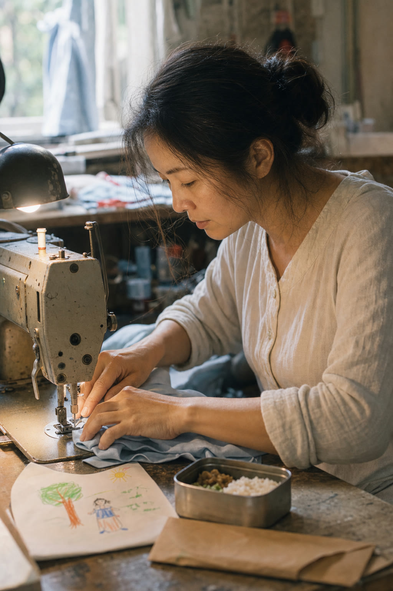

Mini Gift Film / 30秒の贈り物
ภาพ 10 รูป・วิดีโอแนวตั้งหรือแนวนอน 1 ชิ้น・แก้ฟรี 2 ครั้ง
写真10枚・縦または横1本・修正2回。母の日に必要なものを固定したプランです。
1,290 THB 母の日限定・8/5締切
MOTHER’S DAY FILM ・ 12 AUGUST
働く大変さを知った今、
あの頃言えなかった「ありがとう」を母へ。
เปลี่ยนรูปครอบครัว 10 รูปและข้อความของคุณ ให้เป็นวิดีโอ 30 วินาที
家族写真10枚とあなたの言葉から、30秒の贈り物を作ります。
MOTHER’S DAY — 12 AUGUST
今年の母の日は、
普段は照れくさくて
言えない言葉を贈りませんか。
ข้อเสนอเดียวสำหรับวันแม่ ・ 母の日限定Mini
1,290 THB
วิดีโอ 30 วินาที จากรูปถ่ายของคุณ
写真から作る30秒のギフト動画
ปิดรับ 5 ส.ค. ・ 8/5締切・8/11までにお届け
รูปไม่เกิน 10 รูป・เลือกแนวตั้งหรือแนวนอน・แก้ฟรี 2 ครั้ง
写真10枚まで・縦または横・修正2回まで無料。
掲載許可は購入条件ではありません。
SELECTED GIFT FILMS
母が見つめてきた、子どもの人生。
แม่ทำงานหนักเพื่อให้ลูกเติบโตอย่างมีความสุข แม้จะมีวันที่ไม่เข้าใจกัน เมื่อลูกออกไปใช้ชีวิตและหาเงินด้วยตัวเอง จึงเข้าใจสิ่งที่แม่แบกไว้ และทำหนังสั้นจากความทรงจำทั้งหมดเป็นของขวัญ
裕福ではなくても、母は子どもの幸せを守り続けた。衝突と自立を経て、働く大変さを知った娘が「今度は私が支える」と決め、思い出の短編映画を贈るまでを母の視点で描きます。
ตัวอย่างนี้เป็นเรื่องแม่กับลูกสาว・息子版も、ご家族の写真から同じ視点で制作できます。
CHOOSE YOUR FILM
母の日は、まずMiniだけで十分です。
ภาพ 10 รูป・วิดีโอแนวตั้งหรือแนวนอน 1 ชิ้น・แก้ฟรี 2 ครั้ง
写真10枚・縦または横1本・修正2回。母の日に必要なものを固定したプランです。
1,290 THB 母の日限定・8/5締切
45–60 วินาที・เรียบเรียงเรื่อง สี และดนตรีให้เหมาะกับครอบครัวของคุณ
45〜60秒。手紙を整え、色・音楽・間までご家族の物語に合わせて設計します。上の56秒作品はこちらの制作例です。
4,900 THB 45–60秒
ถ้ายังไม่แน่ใจ เลือก Mini ก่อน เราจะแนะนำ Story เฉพาะเมื่อเรื่องของคุณต้องการเวลามากกว่า 30 วินาที
迷ったらMiniを選んでください。30秒では想いが収まらない場合だけStoryをご案内します。
HOW IT WORKS
お話を聞かせてください。あとは丁寧に形にします。
ส่งรูปและข้อความที่อยากบอก ประเมินราคาฟรี
ออกแบบเรื่องราว สี และจังหวะให้เหมาะกับผู้รับ
ดูก่อนจ่าย แก้ไขฟรี 2 ครั้ง
ส่งไฟล์คุณภาพเต็ม พร้อมมอบให้คนสำคัญ
BEFORE YOU ORDER
大切な家族写真だから、曖昧なまま進めません。
ดูวิดีโอตัวอย่างแบบมีลายน้ำก่อนชำระเงิน และรับไฟล์ Full HD หลังชำระเงิน
透かし入りプレビューを確認後にお支払い。入金後、Full HD MP4を納品します。
ไม่เผยแพร่รูป ใบหน้า หรือข้อความ โดยไม่ได้รับอนุญาตอย่างชัดเจน
写真・顔・言葉は、明示的に許可された範囲だけ掲載します。掲載は購入条件ではありません。
ผู้สร้างอาศัยอยู่ในประเทศไทย รับฟังความรู้สึกของครอบครัวทั้งสองภาษา
タイ在住の制作者が、日本語・タイ語の両方でご相談を伺います。
Mini ใช้รูปไม่เกิน 10 รูป และข้อความสั้น ๆ ที่อยากบอกคุณแม่ เราจะช่วยเรียงลำดับให้
Miniは写真10枚までと、お母さまへ伝えたい短い言葉をご用意ください。構成はこちらで整えます。
แก้ฟรี 2 ครั้ง ครั้งที่ 3 เป็นต้นไป 500 บาทต่อครั้ง
2回まで無料。3回目以降は1回500 THBです。
ไฟล์ MP4 แบบ Full HD เลือกแนวตั้งสำหรับมือถือ/LINE หรือแนวนอนสำหรับทีวีอย่างใดอย่างหนึ่ง
Full HD MP4。スマホ・LINE向け縦型、またはテレビ向け横型のどちらか1本です。
หากต้องการเล่าเรื่องมากขึ้น เราจะแจ้งก่อนเริ่มงานและเสนอ Story Film 45–60 วินาที
制作開始前にご説明し、45〜60秒のStory Filmをご提案します。無断で料金は変わりません。
TELL US YOUR STORY
ไม่ต้องตัดสินใจเรื่องรูปหรือแผนก่อน ปรึกษาฟรี รองรับภาษาไทยและญี่ปุ่น
写真もプランも、まだ決めなくて大丈夫です。「母」と一言送ってください。
หากได้รับลิงก์นี้ทาง LINE ให้ส่งคำว่า “แม่” กลับไปยังผู้ส่ง
LINEでこのページを受け取った方は、送信者へ「母」と返信してください。